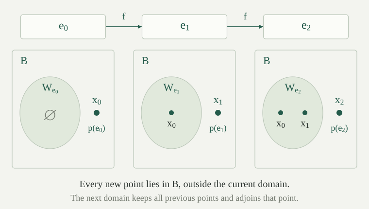

Use the fixed domain enumeration \(W_e=\{x:\varphi_e(x)\downarrow\}\) of the c.e. subsets of \(\mathbb N\). A total recursive function \(p:\mathbb N\to\mathbb N\) is a productive function for \(B\subseteq\mathbb N\) if
The set \(B\) is productive if it has a productive function. The input is an index for the recognized set, rather than a finite list of its currently observed members. The output must escape the entire set \(W_e\), including members recognized much later.
The condition constrains the output only when \(W_e\subseteq B\), but the function \(p\) must terminate on every input. No algorithm for testing that inclusion is part of the definition. Different indices for the same enumerable set may lead to different escape points.
Every productive set is nonempty, infinite, and not computably enumerable.
Fix a productive function \(p\) for \(B\). Choose an index \(e_0\) of the nowhere-defined function, so \(W_{e_0}=\varnothing\). The inclusion \(W_{e_0}\subseteq B\) always holds, and productivity gives \(p(e_0)\in B\). Thus \(B\) is nonempty.
If \(B\) were c.e., some index \(b\) would satisfy \(W_b=B\). Productivity at that index would require \(p(b)\in B\setminus B\), a contradiction. Finally, every finite set is c.e.: a finite list of its members gives a terminating membership test and hence a recognizer. Therefore \(B\) is infinite.
A set \(C\subseteq\mathbb N\) is creative if \(C\) is c.e. and its complement \(\overline C=\mathbb N\setminus C\) is productive. Thus there is a total recursive \(p\) such that every index satisfying \(W_e\subseteq\overline C\) yields \(p(e)\notin C\cup W_e\).
Every creative set is undecidable. Indeed, if \(C\) were decidable, its complement would be decidable and therefore c.e., contradicting . A recognizer for \(C\) and an escape algorithm for enumerable subsets of its complement have different jobs; neither supplies a negative membership decision for arbitrary inputs.
Let \(K=\{e:\varphi_e(e)\downarrow\}\). The identity function \(p(e)=e\) is productive for \(\overline K\). Consequently \(K\) is creative.
Suppose \(W_e\subseteq\overline K\). If \(e\in W_e\), then \(\varphi_e(e)\downarrow\), so \(e\in K\). But the assumed inclusion would also put \(e\) outside \(K\). Hence \(e\notin W_e\).
The equivalence \(e\in W_e\Longleftrightarrow e\in K\) now also gives \(e\notin K\). Therefore \(e\in\overline K\setminus W_e\), exactly the required escape point. The identity function is total recursive, and \(K\) is c.e. by the halting-set theorem, so \(K\) is creative.
For the identity productive function of \(\overline K\), choose an index \(q\) of the total constant-zero function. Does productivity assert that \(p(q)\in\overline K\)? Explain which hypothesis fails.
The program halts on every input, so \(W_q=\mathbb N\). In particular \(q\in K\), and the identity rule returns \(p(q)=q\notin\overline K\). There is no contradiction: \(W_q\subseteq\overline K\) is false. A productive function must still return an answer at this index, but its escape guarantee does not apply.
The rule is therefore an algorithm with a conditional correctness guarantee, not an algorithm that verifies its own input condition. When the input really is an index for an enumerable subset of \(\overline K\), the preceding theorem proves the required membership and escape assertions.
The paired halting set \(K_0=\{\langle e,x\rangle:\varphi_e(x)\downarrow\}\) reduces to \(K\) by a primitive-recursive map. In particular, every c.e. set reduces many-one to \(K\).
For a pair code \(w\) and an unused input \(z\), let \(V(w,z)\simeq U(\operatorname{left}(w),\operatorname{right}(w))\). This is partial recursive jointly in its two arguments by universal evaluation and computable pair decoding. Choose one index \(v\) such that \(\varphi_v(\langle w,z\rangle)\simeq V(w,z)\), and put \(c(w)=s(v,w)\) using the parameter theorem. Then \(c\) is primitive recursive and
The transformed program ignores its own input and runs the specified old computation. In particular, it halts on its own index precisely when that old computation halts. Hence \(w\in K_0\Longleftrightarrow c(w)\in K\). Composing this map with the existing reductions of c.e. sets to \(K_0\) proves the second assertion. This supplies the bridge between the two halting conventions.
For every total recursive \(f:\mathbb N\to\mathbb N\), there is a primitive-recursive index transformation \(g\) such that, for every \(e,x\),
Compute \(f(x)\), then run \(\varphi_e\) on the result. This is partial recursive jointly in \(e,x\). Choose a single paired-input index \(a\) for that procedure and set \(g(e)=s(a,e)\). The parameter theorem proves the displayed partial-value identity, including divergence, and therefore the domain identity.
Although the input transformation \(f\) need only be total recursive, \(g\) is primitive recursive: the code \(a\) is fixed, and \(g\) inserts \(e\) into that code without executing it. The runtime computation of \(f(x)\) remains inside the resulting program.
Suppose \(C\) is c.e. and a total recursive \(f\) satisfies \(x\in K\Longleftrightarrow f(x)\in C\). Choose \(g\) from . Then the specified function \(r(e)=f(g(e))\) is productive for \(\overline C\), so \(C\) is creative.
The function \(r\) is total recursive by composition. Suppose \(W_e\subseteq\overline C\). If \(x\in W_{g(e)}\), then \(f(x)\in W_e\), hence \(f(x)\notin C\). The reduction equivalence gives \(x\notin K\). Thus \(W_{g(e)}\subseteq\overline K\).
The identity productive function for \(\overline K\), applied to this very index \(g(e)\), gives \(g(e)\notin K\) and \(g(e)\notin W_{g(e)}\). The reduction makes \(f(g(e))\notin C\). The preimage identity makes \(f(g(e))\notin W_e\): otherwise \(g(e)\) would belong to \(W_{g(e)}\). Therefore \(r(e)\in\overline C\setminus W_e\), as required.
Let \(A\) be c.e. and let \(p:\mathbb N\to\mathbb N\) be total recursive. There is one total recursive \(h:\mathbb N\to\mathbb N\) such that
Choose an index \(a\) with \(W_a=A\). Define a jointly partial recursive procedure \(G(e,y,x)\) as follows. First compute \(p(e)\). If \(x\ne p(e)\), run forever. If \(x=p(e)\), run \(\varphi_a(y)\); if that computation terminates, return zero. Equivalently, the equal-input branch searches for a positive certificate \(T(a,y,k)\). Consequently \(G(e,y,x)\downarrow\) exactly when \(x=p(e)\) and \(y\in A\). The test involving \(p\) always finishes, and the final wait is an ordinary semidecision for \(A\).
Apply uniform self-reference for partial families. More explicitly, choose one index \(v\) with \(\varphi_v(\langle e,\langle y,x\rangle\rangle)\simeq G(e,y,x)\), and form the total primitive-recursive index builder \(F(e,y)=s(s(v,e),y)\). The parameterized recursion theorem gives one selector \(h(y)=s(q,y)\), with fixed \(q\), satisfying
Taking domains gives the stated two cases. Building the program text requires no negative membership test for the parameter. The index computation terminates, while the program it produces may wait forever. The same computable selector works for all \(y\); separate, uncoordinated choices of fixed points would not suffice for the reduction below.
Let \(C\) be creative, with productive function \(p\) for \(\overline C\), and let \(A\) be any c.e. set. Choose the selector \(h\) from . The specified map \(r(y)=p(h(y))\) is a many-one reduction of \(A\) to \(C\).
Both \(h\) and \(p\) are total recursive, so \(r\) is total recursive. If \(y\notin A\), then \(W_{h(y)}=\varnothing\subseteq\overline C\). Productivity gives \(p(h(y))\in\overline C\), so \(r(y)\notin C\).
If \(y\in A\), then \(W_{h(y)}=\{r(y)\}\). Suppose for a contradiction that \(r(y)\notin C\). This would put \(W_{h(y)}\) inside \(\overline C\), allowing productivity at \(h(y)\). Its conclusion would say that \(p(h(y))=r(y)\) is outside \(W_{h(y)}\), contradicting the singleton-domain identity. Therefore \(r(y)\in C\).
Together the cases prove \(y\in A\Longleftrightarrow r(y)\in C\), preserving both answers as required for a many-one reduction. The algorithm computing \(r\) calls neither a decision procedure for \(A\) nor a membership oracle for \(C\).
For every c.e. set \(C\subseteq\mathbb N\), the following are equivalent:
Creativity gives every reduction by . Applying this conclusion to the c.e. set \(K\) gives the third condition. Conversely, the third condition and the standing c.e. hypothesis give creativity by . Thus this is exactly many-one completeness among c.e. sets, now characterized by an escape algorithm on the complement.
This characterization also detects incomplete enumerable sets: a simple set has an immune complement, which cannot be productive, so it is not many-one complete.
Can the c.e. hypothesis on \(C\) be dropped from the characterization? Consider
Show that every c.e. set reduces to \(D\), but \(D\) is not creative.
The total recursive map \(n\mapsto2n\) reduces \(K\) to \(D\): an even number can enter only through the first displayed component, so \(2n\in D\Longleftrightarrow n\in K\). By and composition, every c.e. set therefore reduces to \(D\).
On the other hand, \(2n+1\in D\) holds exactly when \(n\notin K\) holds. If \(D\) were c.e., its computable preimage under \(n\mapsto2n+1\) would make \(\overline K\) c.e., contradicting and the productivity of \(\overline K\). Thus \(D\) is not c.e. and fails the first requirement in the definition of creativity. Receiving all c.e. problems is a hardness condition; creativity additionally requires that the target itself be c.e.
For every total recursive \(p:\mathbb N\to\mathbb N\), there is a primitive-recursive map \(f\) of indices satisfying
Use the partial recursive procedure \(V(e,x)\) that first computes \(p(e)\). If \(x=p(e)\), return zero immediately. Otherwise run \(\varphi_e(x)\), returning its output if it terminates. The domain of this procedure at \(e\) is exactly \(W_e\cup\{p(e)\}\). In particular, the special input \(p(e)\) succeeds even if the old computation diverges there.
Choose one index \(v\) with \(\varphi_v(\langle e,x\rangle)\simeq V(e,x)\), and put \(f(e)=s(v,e)\). Specialization gives the displayed identity and makes \(f\) primitive recursive. No productivity assumption or inclusion test is needed to construct this map; those assumptions will establish freshness when it is iterated.
Every productive set \(B\subseteq\mathbb N\) contains an infinite c.e. subset. More precisely, for a productive function \(p\) for \(B\), choose \(W_{e_0}=\varnothing\) and \(f\) as in , and define
The sequence \(n\mapsto x_n\) is total recursive and injective, every \(x_n\) lies in \(B\), and \(W_{e_n}=\{x_i:i<n\}\) for every \(n\).
The initial index is a fixed natural number and \(f\) is total recursive, so primitive recursion computes \(e_n\). Composing with \(p\) computes \(x_n\), with all computations terminating.
Inductively maintain the full invariant \(W_{e_n}=\{x_i:i<n\}\subseteq B\). At \(n=0\), the domain is empty. If the invariant holds at \(n\), productivity gives \(x_n=p(e_n)\in B\setminus W_{e_n}\). Thus the new value belongs to \(B\) and differs from every previous value. The index transformation gives
This establishes the invariant at the next stage, including the required inclusion. It follows for all \(n\) that the computed values belong to \(B\) and are pairwise distinct.
The range \(X=\{x_n:n\in\mathbb N\}\) is infinite by injectivity and is c.e. by the computable-range characterization. Hence \(X\subseteq B\) is the promised infinite c.e. subset. Applying the infinite decidable subset theorem to \(X\) also shows that every productive set contains an infinite decidable subset, although the displayed sequence need not itself be increasing.

In contrast, an immune set is infinite and contains no infinite c.e. subset. The theorem therefore excludes immunity for every productive set.
Let \(x_n\) be the sequence just constructed and let \(q\) be an index computing the total function \(n\mapsto x_n\). Can productivity at \(q\) be invoked to produce a point outside \(X=\{x_n:n\in\mathbb N\}\)? Give the appropriate index and show that \(X\) is a proper subset of \(B\).
The domain of program \(q\) is \(W_q=\mathbb N\), not its output range \(X\). A productive set is not c.e., so it cannot be all of \(\mathbb N\); therefore \(W_q\subseteq B\) is false. Productivity gives no escape guarantee at this index.
Instead, choose a recognizer of \(X\) and let \(b\) be its index. On input \(y\), the recognizer searches successive \(n\) for \(x_n=y\). Each test terminates because the sequence is total recursive, and the search stops exactly on its range. Thus \(W_b=X\subseteq B\). Productivity at this index gives \(p(b)\in B\setminus X\), proving that the infinite enumerable subset is proper and identifying an escape point from the whole sequence.